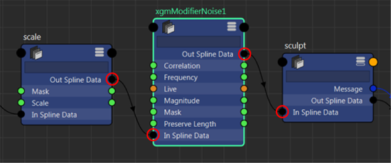

您可以使用“交互式修饰编辑器”(Interactive Groom Editor)或者通过在“节点编辑器”(Node Editor)中创建修改器节点，将交互式修饰修改器添加到修饰。若要修改特定修改器的特性，请选择该修改器，然后在“属性编辑器”(Attribute Editor)中编辑其属性。
为该修改器创建一个遮罩，这样便可更好地控制如何在头发上分布其效果。您可以使用纹理文件设置修改器属性。请参见使用遮罩。
在交互式修饰编辑器中使用修改器
| 目标 | 操作 |
|---|---|
| 添加修改器 | 选择描述，单击“添加修改器”(Add Modifier)，然后从显示的列表中选择一个修改器。
该修改器将添加到修改器堆栈的顶部。其输入会自动连接到其下方的修改器的输出。 |
| 编辑修改器设置 | 选择修改器，然后在“属性编辑器”(Attribute Editor)中编辑修改器设置。 |
| 重新排序修改器 | 选择下列方法之一：
|
| 复制修改器 | 选择下列方法之一：
|
| 禁用修改器
禁用修改器将暂时从处理堆栈中将其移除。不会删除修改器设置。 |
单击修改器左侧的  图标。 图标。
单击 |
| 删除修改器
删除修改器会将它从描述节点网络中永久移除并删除其所有设置。 |
选择修改器，然后选择以下方法之一：
|
 或
或  ，在堆栈中向上或向下移动修改器。
，在堆栈中向上或向下移动修改器。
 图标以重新启用修改器。
图标以重新启用修改器。
 图标。
图标。
使用节点编辑器添加修改器
与其他 Maya 节点一样，添加修改器之后，您可以在“节点编辑器”(Node Editor)中编辑、删除或禁用它。
- 在“节点编辑器”(Node Editor)中，创建一个修改器节点（通过按 Tab 键并键入其名称），然后按 Enter 键。
所有交互式修饰修改器节点均以 xgmModifier 开头，后跟其名称，例如 xgmModifierNoise（对于噪波修改器）。有关修改器及其节点名称的列表，请参见交互式修饰修改器。
修改器节点将在“交互式修饰编辑器”(Interactive Groom Editor)中显示其节点名称。
- 根据要在堆栈中放置修改器的位置，执行以下操作之一：
- 将修改器节点放置在另外两个交互式修饰修改器节点之间，然后将其“输入样条线数据”(In Spline Data)和“输出样条线数据”(Out Spline Data)端口连接到相邻节点的相应端口。

- 若要将该节点放置在修改器堆栈的底部，使其首先进行计算，请将其“输入样条线数据”(In Spline Data)端口连接到 description_base 节点的“输出样条线数据”(Out Spline Data)端口。
- 若要将该节点放置在修改器堆栈的顶部，使其最后进行计算，请将其“输出样条线数据”(Out Spline Data)端口连接到 descriptionShape 节点的“输入样条线数据”(Input Spline Data)端口。
- 将修改器节点放置在另外两个交互式修饰修改器节点之间，然后将其“输入样条线数据”(In Spline Data)和“输出样条线数据”(Out Spline Data)端口连接到相邻节点的相应端口。